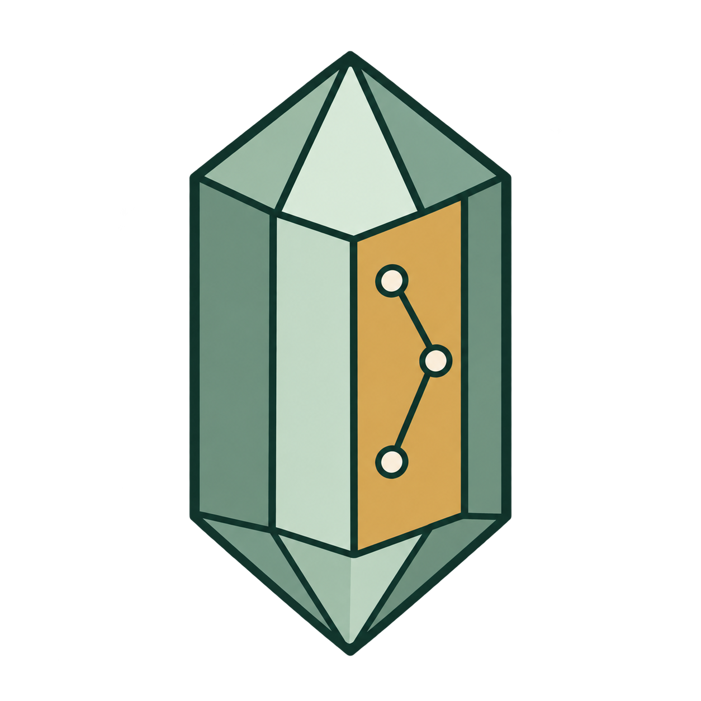

MINERAL ATLAS 本机离线
固定方向观察，选面后推拉或调整比例。
先练习选点、画棱线和圈面；不需要先懂三维软件。
参考外形不等于实物鉴定。旧项目另存修订，原文件保持不变。
先观察外形、共棱和方向，再显示参考指数。它们是条件参数，不是标准答案的实物测定。
画棱线、圈面、修边，再叠加当前模型核对。
先选照片，再选择画图工具。
照片留在本机，不会自动上传。标注坐标按原图显示方向保存。
拖线可平移整条棱；拖面边界只移动这条边，拖面内部平移整个区域。Shift 可临时关闭拾取。
点击面内均匀区域；文字或阴影干扰时，先补棱线再识别。
先检查整体轮廓，再用棱和面辅助对齐。仅计算相机，不自动改变外形。
当前模型外形不合适时，再从参考库寻找其他候选。
照片角点只作落点建议，不自动认定晶棱。
此入口使用你填入的坐标，不自动拾取。
Enter 完成 · Backspace 退点 · Esc 取消按住 Shift 临时关闭拾取
几何量、轴约定与条件指数分别核对。
几何量使用模型相对单位；指数是当前参考轴下的低阶候选。外形不能唯一测定真实晶胞、点群或矿物种属。
默认保持实体外形不变，按新参考轴重新解析指数候选。轴箭头长度只表示方向。
选择方向后，在任意固定视图点击两个紫色顶点；也可使用当前面的外法线。
文件写入本机输出目录，可继续编辑或导出离线包。
保存参数和修改记录，或导出可独立浏览的模型与报告。
保存每张照片的棱线、面区域和关联。再次导入时会核对原图指纹。
导出模型摘要、纠错标注和复核提示词，供你选择的助手检查。默认不含原照片。导入回复后逐项检查，再选择采纳；不自动联网。
先生成复核包。修改模型后需要重新导出，旧回复不能覆盖新模型。